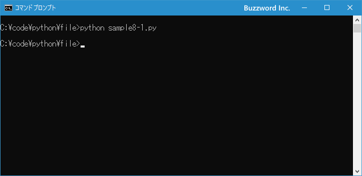
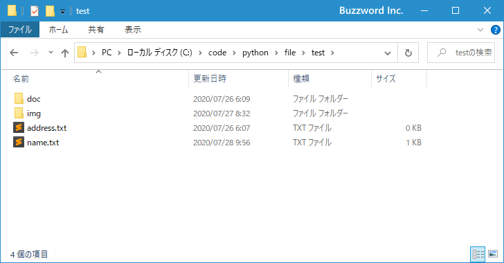
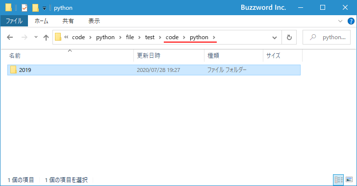
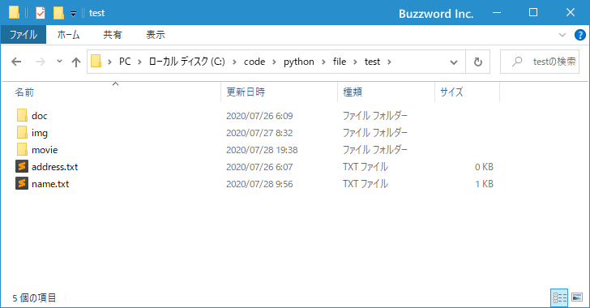
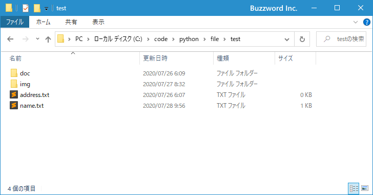
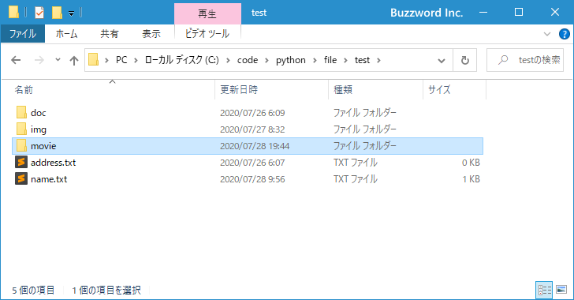
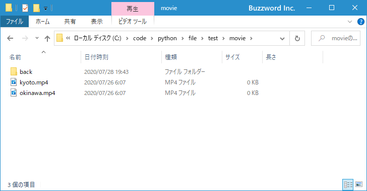
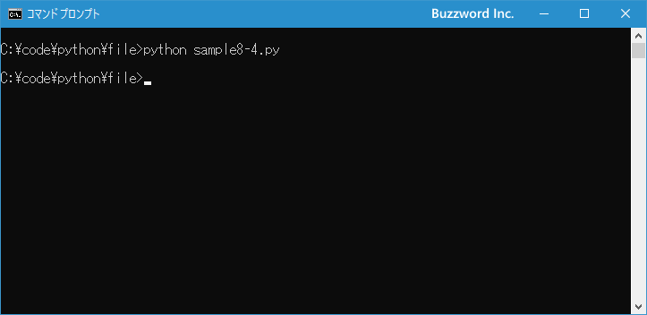

ディレクトリの作成と削除
Python の os モジュールで用意されている os.mkdir 関数と os.makedirs 関数を使って新しいディレクトリを作成する方法、 os.rmdir 関数で作成済みのディレクトリを削除する方法、そして shutil モジュールで用意されている shutil.rmtree 関数を使ってディレクトリと中身をまとめて削除する方法について解説します。
※ pathlib モジュールを使ってディレクトリを作成したり削除したりする方法については「ディレクトリの作成と削除(pathlibモジュール)」を参照されてください。
ディレクトリを作成する
新しいディレクトリを作成するには os モジュールで用意されている mkdir 関数を使います。
os.mkdir(path, mode=0o777, *, dir_fd=None)
1 番目の引数に指定したパスが示すディレクトリを作成します。省略可能な 2 番目の引数には、作成するディレクトリの権限を設定します(省略された場合は 8 進数で 0o777 が設定されます)。
例えば次のように記述します。
import os path = './test/movie' os.mkdir(path)
mkdir 関数の場合、中間ディレクトリを作成することができません。例えば c:\test\img\back\2020 というディレクトリを作成するときに c:\test\img\back ディレクトリが存在していないと FileNotFoundError が発生します。
import os
path = './test/img/back/2020'
os.mkdir(path)
>> FileNotFoundError: [WinError 3] 指定されたパスが見つかりません。: './test/img/back/2020'
また作成しようとしたディレクトリが既に作成されている場合は FileExistsError が発生します。
import os
path = './test/img'
os.mkdir(path)
>> FileExistsError: [WinError 183] 既に存在するファイルを作成することはできません。: './test/img'
それでは簡単なサンプルプログラムを作って試してみます。テキストエディタで次のように記述したあと、 sample8-1.py という名前で保存します。
import os path = './test/movie' os.mkdir(path)
プログラムと同じディレクトリの中に test という名前のディレクトリがあり、 test ディレクトリの中に次のようにファイルとディレクトリが含まれています。
その後で、次のように実行してください。
python sample8-1.py

指定のパスが示すディレクトリが新しく作成されました。

中間ディレクトリも同時に作成する
ディレクトリを作成するもう一つの方法は os モジュールで用意されている makedirs 関数を使います。 makedirs 関数の場合は、必要であれば中間ディレクトリも同時に作成します。
os.makedirs(name, mode=0o777, exist_ok=False)
1 番目の引数に指定したパスが示すディレクトリを作成します。省略可能な 2 番目の引数には、作成するディレクトリの権限を設定します(省略された場合は 8 進数で 0o777 が設定されます)。省略可能な 3 番目の引数に True を指定すると、作成しようとするディレクトリが既に存在してもエラーが発生しません。
例えば次のように記述します。
import os path = './test/movie' os.makedirs(path)
makedirs 関数の場合、必要であれば中間ディレクトリを自動的に作成します。例えば './test/movie/back/2020' というディレクトリを作成するときに './test/movie/back' ディレクトリが存在していない場合、先に中間ディレクトリである './test/movie/back' ディレクトリを作成したあとで指定のパスのディレクトリを作成します。
import os path = './test/movie/back/2020' os.makedirs(path)
また作成しようとしたディレクトリが既に作成されている場合、引数を省略するか明示的に exist_ok=False を設定すると FileExistsError が発生します。引数で exist_ok=True を設定すると、既にディレクトリが存在していてもエラーにはなりません。
import os path = './test/movie' os.makedirs(path, exist_ok=True)
それでは簡単なサンプルプログラムを作って試してみます。テキストエディタで次のように記述したあと、 sample8-2.py という名前で保存します。
import os path = './test/code/python/2019' os.makedirs(path, exist_ok=True)
プログラムと同じディレクトリの中に test という名前のディレクトリがあり、 test ディレクトリの中に次のようにファイルとディレクトリが含まれています。

その後で、次のように実行してください。
python sample8-2.py
2019 ディレクトリの親ディレクトリである python ディレクトリ、そして python ディレクトリの親ディレクトリである code ディレクトリをそれぞれ作成しました。

ディレクトリを削除する
ディレクトリを削除するには os モジュールで用意されている rmdir 関数を使用します。
os.rmdir(path, *, dir_fd=None)
1 番目の引数に指定したパスが示すディレクトリを削除します。ディレクトリを削除するには、ディレクトリの中身が空である必要があります。
例えば次のように記述します。
import os path = './test/movie' os.rmdir(path)
削除するディレクトリが空でない場合、 OSError が発生します。
import os
path = './test/doc'
os.rmdir(path)
>> OSError: [WinError 145] ディレクトリが空ではありません。: './test/doc'
それでは簡単なサンプルプログラムを作って試してみます。テキストエディタで次のように記述したあと、 sample8-3.py という名前で保存します。
import os path = './test/movie' os.rmdir(path)
プログラムと同じディレクトリの中に test という名前のディレクトリがあり、 test ディレクトリの中に次のようにファイルとディレクトリが含まれています。

その後で、次のように実行してください。
python sample8-3.py

パスが示すディレクトリが削除されました。

ディレクトリとディレクトリの中身をまとめて削除する
ディレクトリを格納されているファイル毎まとめて削除するには shutil モジュールで用意されている rmtree 関数を使用します。
shutil.rmtree(path, ignore_errors=False, onerror=None)
1 番目の引数に指定したパスが示すディレクトリを削除します。ディレクトリにファイルやディレクトリが含まれていた場合はまとめて削除されます。
例えば次のように記述します。
import shutil path = './test/movie' shutil.rmtree(path)
それでは簡単なサンプルプログラムを作って試してみます。テキストエディタで次のように記述したあと、 sample8-4.py という名前で保存します。
import shutil path = './test/movie' shutil.rmtree(path)
プログラムと同じディレクトリの中に test という名前のディレクトリがあり、 test ディレクトリの中に movie ディレクトリが含まれています。

movie ディレクトリの中にはファイルがいくつかとディレクトリが含まれています。このディレクトリの中にもファイルが含まれています。

その後で、次のように実行してください。
python sample8-4.py

パスが示すディレクトリが、ディレクトリの中に格納されていたファイルなども含めてまとめて削除されました。
-- --
Python を使って新しいディレクトリを作成する方法、および作成済みのディレクトリを削除する方法について解説しました。
( Written by Tatsuo Ikura )

著者 / TATSUO IKURA
初心者～中級者の方を対象としたプログラミング方法や開発環境の構築の解説を行うサイトの運営を行っています。